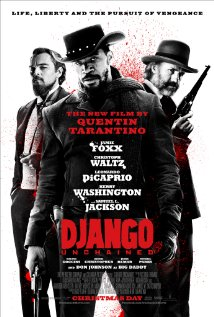
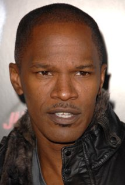

Django Unchained
Summary
A former slave and a German bounty hunter become unlikely allies in the battle against a tyrannical plantation owner in this western from visionary director Quentin Tarantino. Two years before the Civil War pits brother-against-brother, German-born fugitive hunter Dr. King Schultz (Academy Award-winner Christoph Waltz) arrives in America determined to capture the outlaw Brittle brothers dead or alive. In the midst of his search, Dr. Schultz crosses paths with Django (Academy Award-winner Jamie Foxx), a freed slave and skilled tracker who seeks to rescue his beloved wife Broomhilda (Kerry Washington) from ruthless plantation owner Calvin Candie (Academy Award-nominee Leonardo DiCaprio). Once Django has aided Dr. Schultz in coralling the Brittle brothers, the two team up to capture some of the most wanted men in the South. Meanwhile, Django never loses sight of his mission to free Broomhilda from the treacherous slave trade before it's too late. Upon arriving at Candie's nefarious plantation, dubbed Candyland, Django and Dr. Schultz discover that slaves are being groomed for gladiator-like competitions by Candie's malevolent right-hand man Billy Crash (Walton Goggins), and together they skillfully work their way onto the compound for a closer look. But just as Django and his partner locate Broomhilda and plot a daring escape, Candie's house slave Stephen (Academy Award-nominee Samuel L. Jackson) catches wind of their plan, and informs his master of the betrayal. Now, as a clandestine organization attempts to back them into a corner, Django and Dr. Schultz will have to come out with pistols blazing if they ever hope to free Broomhilda from Candyland and the clutches of its vile proprietor. ~ Jason Buchanan, Rovi
Cast names (top billed)
- Jamie Foxx
- Christoph Waltz
- Leonardo DiCaprio
- Kerry Washington
- Samuel L. Jackson
Leading Actor Bio
Jamie Foxx
Jamie's mother, Louise, was an adopted child. When her marriage to his father failed, his grandparents, Mark and Estelle Talley, stepped in and, at age 7 months, adopted him too. He says he had a very rigid upbringing that placed him in the Boy Scouts and the church choir. During high school, he played quarterback for his high school team and was good enough that he got press in Dallas newspapers. He studied music in college. He released a music album in 1994, "Peep This" and sings the theme song for his 1999 movie, Any Given Sunday (1999). However, in 1989, his life changed when a girl friend challenged him to get up onstage at the Comedy Club. In fact, he says he took his androgynous stage name because he learned that women got preference for mike time on open stage nights. That led to his being cast in "Roc" (1991) and "In Living Color" (1990) and ultimately to his own WB network TV series. He has a daughter, Corrine, born in 1995, who lives with her mother. - IMDB